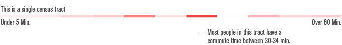
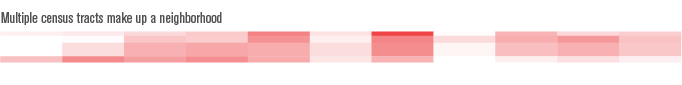

Hover over this graphic to learn how long it takes people living in different areas of Boston to get to work (and who has the extreme commutes).
What are those red rectangles?
Each row of rectangles represents a single census tract (made up of many street blocks). Within this row, each rectangle represents a group of people with a certain commute time. The darker the color, the more people belong to this group.

These rows/census tracts are grouped together by neighborhood.

Where is this data from?
American Community Survey 2013 5-year estimate